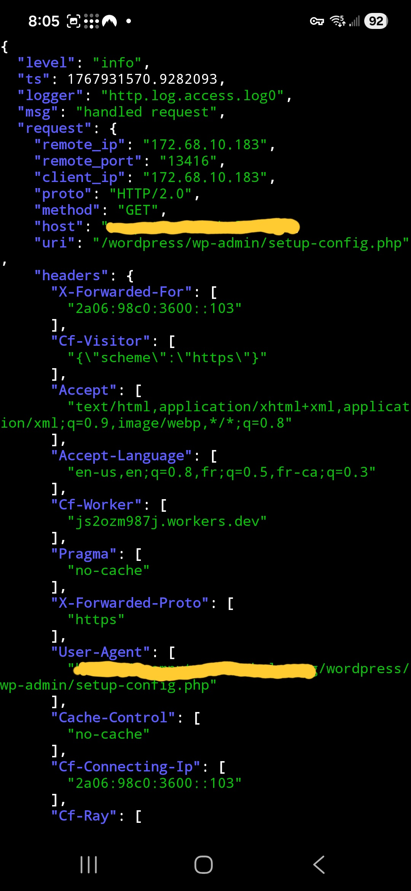
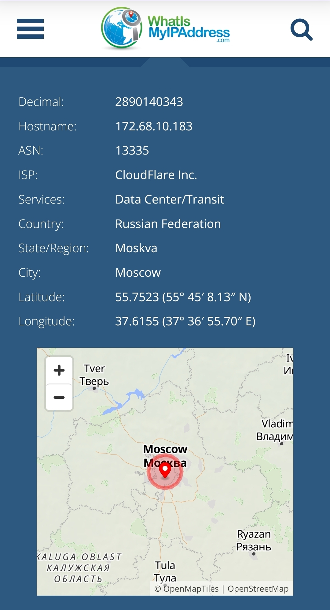
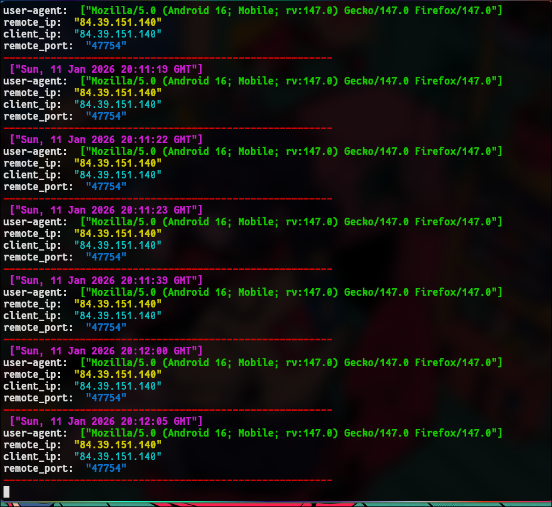
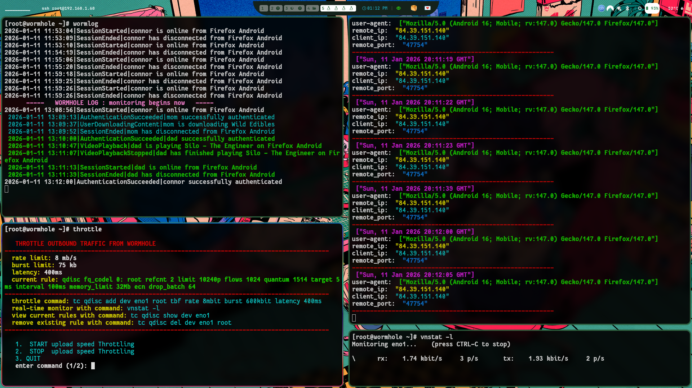

Hackers
weird traffic
I set up a reverse proxy on my server with caddy and had it configured to log all http requests to my server in json format. For my own interest I started working on a script to filter out unique ip address's and there respective User-Agents.
Then as I was testing it out I see this weird traffic of user-agents pretending to be wordpress admin configs. I don't have wordpress even installed on this machine, so my guess is that the port I have open to my reverse proxy is a common one that wordpress servers use.
Most likely it's an automated bot someone has wrote to try out on any server with this port open. Or maybe they guess all the common services a person may run like apache, wordpress etc. It makes me a little uneasy and it's sad that people do it. But it is also pretty interesting

Here you can see the json of one of the logs. There was a whole string of them from the same ip address trying different setup/admin pages that don't even exist on my server thankfully
If one of these admin pages did exist because I was running a wordpress server then I think they would then probably try and brute force guess the password with a script. Not sure what the end goal would be, stealing data?
I looked up the ip that was spoofing wordpress admin and it comes from Moscow, Russia.
Straight from the Kremlin itself LOL

Some sort of data center so I am sure the Russian government is involved. So strange. I get so many random http request seeing this was like a needle in a hay stack. Over the course of about 2 1/2 days I've gotten almost 10,000 requests. Maybe 50 of those are legitamte from my servers users. The fact that I noticed this particular log because I was working on my script is so crazy to me. In the future I would like to make a script that logs all unique ips. Don't know if it will really tell me much but could be interesting to see anyways. Could be fun to write too
Heres my script I got updated. Looking pretty nice and easy to read at a glace. It updates in real time as the logs come in as well. It's a bit easier to read than the json format

[thats not my real ip thats a vpn]
I use tmux on my server to have multiple sessions split screened but I cant take screenshots on it. So here is a general idea of the layout of my log systems but just as ssh sessions instead. I'm working on a script that will do the tmux setup and window proportions how I like it automatically.

top left - wormlog (users log)
bottom left - throttle.sh
top right - ip/user-agent log
bottom right - vnstat (network traffic)
Anyways this made me really consider how safe my passwords are and I decided to update them. Originally it was just a 6 letter word lol. Way too easy for a brute force attack to guess. And worse too is I was using the same password for both my wormhole admin account and the /root password to my server. So a hacker would have access to my wormhole login page. They wouldn't necessarily know my admin username though but still. They could run a script trying different passwords until it's cracked and then the worst they could do is delete all my media/movies/etc. BUT if they tried using that password to ssh into my server they would have full access. Turn me into some bitcoin mining operation or malware super spreader i dont even know.
It also made me revauluate which ports I keep open. I often keep a high port open for netcat transfers of media from my laptop, so I've started closing that one when I'm done with it. It only takes an extra second I've just been lazy and careless until now.
I should probably just turn off systemctl ssh daemon too when I'm not using it but it is so nice to be able to access my servers terminal from my phone when I am not home. And with my new password I don't think it would be practical for a brute force attack to guess it any more. So its probably safe. And
I guess this isn't really critical infrastructure to me. It's literally just movies and cartoons and messing around lol.